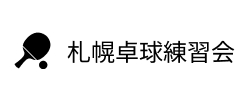

<header>
    <nav>
        
        <button class="hamburger" aria-label="メニューを開く">
            <span></span><span></span><span></span>
        </button>
        <ul class="nav-links">
            <li><a href="index.html#hero">札幌卓球練習会とは</a></li>
            <li><a href="index.html#practice-info">練習案内</a></li>
            <li><a href="index.html#tournament-info">大会案内<span class="badge-new">NEW</span></a></li>
            <li><a href="index.html#organizer">主催者紹介</a></li>
            <li><a href="gallery.html">大会結果</a></li>
            <li><a href="index.html#contact">問い合わせ</a></li>
        </ul>
    </nav>
</header> 